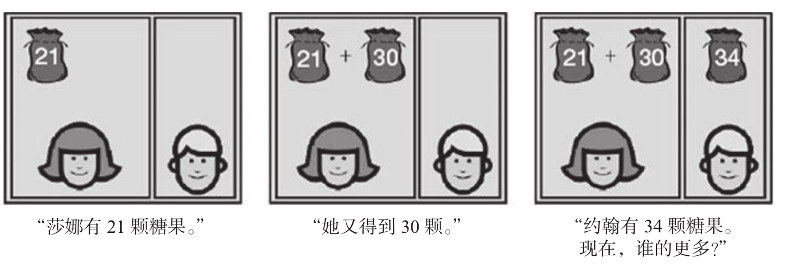
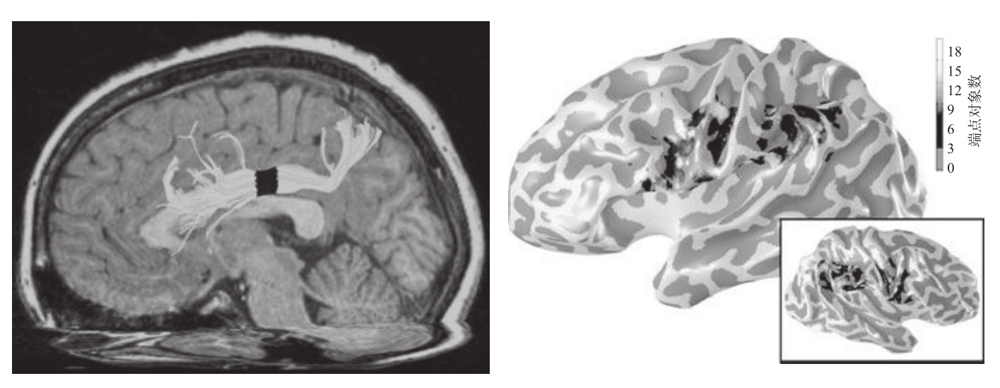

数学中一个最大的未解之谜就是为什么有些人比其他人更擅长数学。
霍华德·伊夫斯（Howard Eves），《回归数学圈》（Return to mathematical circles）
目前有一个直接的证据显示，数量和数词的整合为学龄前儿童提供了数学直觉。卡米拉·吉尔摩（Camilla Gilmore）和伊丽莎白·斯佩尔克在一个冒险的实验中证明了这个观点。他们让5至6岁的幼儿园儿童做两位数的加减法72！在这个年纪，儿童还没有学过加法，那么这个实验可行吗？如图10-8所示，实验的诀窍在于测试只要求对数量的近似理解。或者告诉他们：“莎娜有64颗糖果，她送给别人13颗；约翰有34颗糖果；那么谁的更多？”这是一道文字题，想得到答案，必须先将这些文字转化成数量，并在不进行任何精确计算的情况下思考它们之间的关系。

这个实验考察学龄前儿童对加减法中的符号数字有多大的直觉。虽然从来没有人告诉他们有关两位数以及加减法的知识，不论性别和社会出身，其表现都比随机概率好得多。在这样的例子中，他们依赖自身对近似数量的直觉，只有当两个数字之间的距离足够大时，他们才会成功。这个近似测验中的成功率能够很好地预测儿童未来的数学成绩。
图10-8 数感是幼儿数学直觉的强大来源
资料来源：改编自Gilmore et al., 2007。
儿童在吉尔摩和斯佩尔克测试中的表现表明他们正是这么做的。他们的反应表现了近似数字系统的所有特征：他们的答案只在统计学上达到正确（大约70%的正确率），随着两个选项数值间的距离增加，正确率有所提高。此外，他们的减法做得比加法差，这完全符合近似加工的数学理论的预测73。
吉尔摩和斯佩尔克的实验是非常基础的，因为它验证了数感假设的主要原则：即使还没有经过教育，学龄前儿童也有能力完成算术，在早期数量直觉的基础上，他们建立了对符号算术的认识。即使他们从未学习过64和13的意义，但他们学会了把这些单词和近似数量建立起关联。从这点来看，两位阿拉伯数字的加法显然超出他们的理解范围，但他们可以使用数量的先验知识去获得一个接近“64-13”的近似答案。
引人注目的是，即使剔除智力、一般学业成就和社会经济水平的因素之后，在这类近似任务中的敏锐度仍是成功预测儿童未来数学成绩的良好指标74。在稍大一些的6至8岁儿童中，数量敏锐度的变化也能够预测数学成绩，但不能预测阅读成绩75。从更大的年龄跨度来看，学校数学成绩和14岁时的数量敏锐度存在相关76。更重要的是，较差的数量敏锐度能够鉴别出数学学习困难的儿童。在曼努埃拉·皮亚扎的敏锐度测验中，一个在算术方面有特定缺陷的10岁儿童，他的敏锐度成绩与正常5岁儿童的水平相当。
这些发现都直接证明，个体在算术能力上的差异与在数感能力上的差异相一致。事实上，这种个体差异甚至能从大脑层面被检测到。数学测试中得分更高的青少年，与其他儿童相比，他们的大脑在左侧顶内区的数感与额叶之间建立了更加高效的联结（见图10-9）77。然而这个因果联系仍需要进一步确定。敏锐的数感是否使一些儿童学习算术更轻松？或者，在生命的早期接触算术教育能否促进数感发展？可能两者都存在。我强烈怀疑儿童的发展是一个双向或是“螺旋”的因果关系：早期数感促进算术理解，而算术理解本身有助于数字敏感度，然后形成一个不断上升的良性循环。相反，数感水平低于同龄人的儿童很可能在数学的其他领域也逐渐落后。对于他们，这个循环就变成了恶性循环：由于他们的水平不能够正常提高，与其他人的知识差距不断扩大，他们就会更加落后于同龄的儿童。

在最近的一个磁共振研究中，在近似算术测试中取得高分的儿童，其特定脑区的纹理组织也显示出更好的连接。左侧的图显示了一个相关的纤维束，它将包含数感脑区在内的左侧顶内区连接到额叶皮层。这样，按理说它应该能够促进数字的外显操作和记忆。然而，使用这种方法，我们无法确定观察到的差异是遗传的结果还是环境造成的。
图10-9 通过扫描大脑，是否能够推断出一个人的数学水平？
资料来源：改编自Tsang et al., 2009。
从本书第1版出版以后，人们对发展性计算障碍的儿童脑机制的认识已经有了很大的进展。1997年，我只是简略地提到了一些在一般知觉、语言和智力等方面都正常的儿童（3%～6%）78，他们在数字加工和算术上却出现了不成比例的困难。
我们称其为计算障碍，它等同于计算领域中的阅读障碍。对于他们中的许多人，这个缺陷会影响到许多非常基础的任务。他们甚至没有能力确定一个集合是由2个还是3个物品组成，或者5和6这两个数字哪个更大。此外，虽然最初存在一些争论，但目前已经有越来越多的证据表明，他们的数感受到了破坏。他们对小数字1、2、3的感数能力不正常，常常错误判断点阵数量，他们的近似数量敏锐度降低了79。
与这种缺陷有关的自然假说认为，无论是因为遗传疾病还是因为早期的脑损伤，这种缺陷必定由顶叶的数量系统受损引起。最近，一些脑成像研究证实了这个假设。有个研究将早产的青少年分为两组：一组成员在童年时期就患有计算障碍，另一组没有80。研究人员用磁共振成像技术计算整个皮层中的灰质密度，仅有计算障碍组的儿童左侧顶内沟部位的灰质密度选择性减少，而这个位置正是人们在进行心算时得到激活的脑区。
由于围产期脑损伤通常会影响到位于顶叶下部的脑室周围后部（posterior periventricular）脑区的正常发育，这可能是早产儿特别容易患计算障碍，以及其他顶叶受损导致的空间定向或运动失调障碍（运动笨拙）的主要原因。但我们同样发现了另一些“真正的计算障碍”案例，尽管一些孩子正常出生，他们同样存在缺乏稳固的数感的问题。这里同样观察到了顶叶皮层的紊乱，因为当要求这些儿童进行简单的数感任务时，这个脑区不能被正常激活81。
和阅读障碍一样，我们认为计算障碍也涉及遗传的成分。只要家庭中有1个以上的计算障碍儿童，他的直系亲属间患计算障碍的流行率比其他人群高出10倍82。对于同卵双胞胎，如果其中一个患有计算障碍，那么另一个同样患病的可能性高达70%。83虽然还没有确定候选基因，但我们知道，在某些严重的遗传疾病中，计算障碍的发病率十分频繁84。特纳氏综合征就是其中的一种，这种疾病是由染色体异常造成的，患病的女性天生只有一条X染色体。我和尼古拉·莫尔科（Nicolas Molko）扫描特纳氏综合征患者时发现，在进行大数字加法计算时，他们的右侧顶叶脑区出现了异常的激活85。我们还发现了一个重要的现象，他们的皮层褶皱模式表现出紊乱。因为在妊娠晚期才形成皮层褶皱，这部分区域的异常表明，患者在早期大脑发展过程中出现遗传损伤。